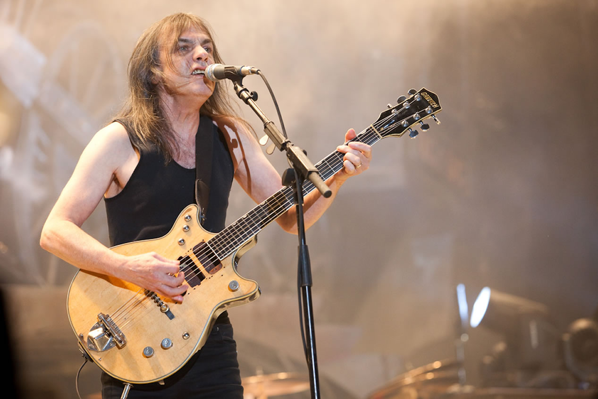

Log out
Muere Malcolm Young, cofundador de AC/DC, a sus 64 años
El artista falleció este sábado, según informó la agrupación a través de Facebook.
Malcolm Young, guitarrista y uno de los fundadores del legendario grupo de rock australiano AC/DC, falleció este sábado a los 64 años, según informó la agrupación en su cuenta de Facebook. (Lea: AC/DC anuncia la retirada del guitarrista Malcom Young por problemas de salud)
En 2014, el artista se retiró definitiva de los escenarios por problemas de salud. El guitarrista sufrió de demencia durante varios años y en septiembre de es año ingresó a un centro especializado para tratar su enfermedad.
"Como guitarrista, compositor y visionario era un perfeccionista y un hombre único", menciona el grupo en su comunicado.Malcolm nació en la ciudad escocesa de Glasgow, Escocia. En 1973, fundó el grupo de música "hard rock" junto a su hermano Angus Young en Sídney.
"Como su hermano es difícil expresar en palabras lo que él ha significado para mí durante toda mi vida, el vínculo que teníamos era único y muy especial", expresó Angus Youg.

AC/DC DE LUTO
El fallecimiento de Young se produce un mes después del de su hermano George Young, quien fue productor de AC/DC.
Durante los años 80 grabaron álbumes como For Those About To Rock (1981), Flick Of The Switch (1983), 74 Jailbreak (1984), Fly On The Wall (1985), Who Made Who (1985) y Blow Up Your Video (1988), mientras que en la década de los 90 redujeron la producción de discos.